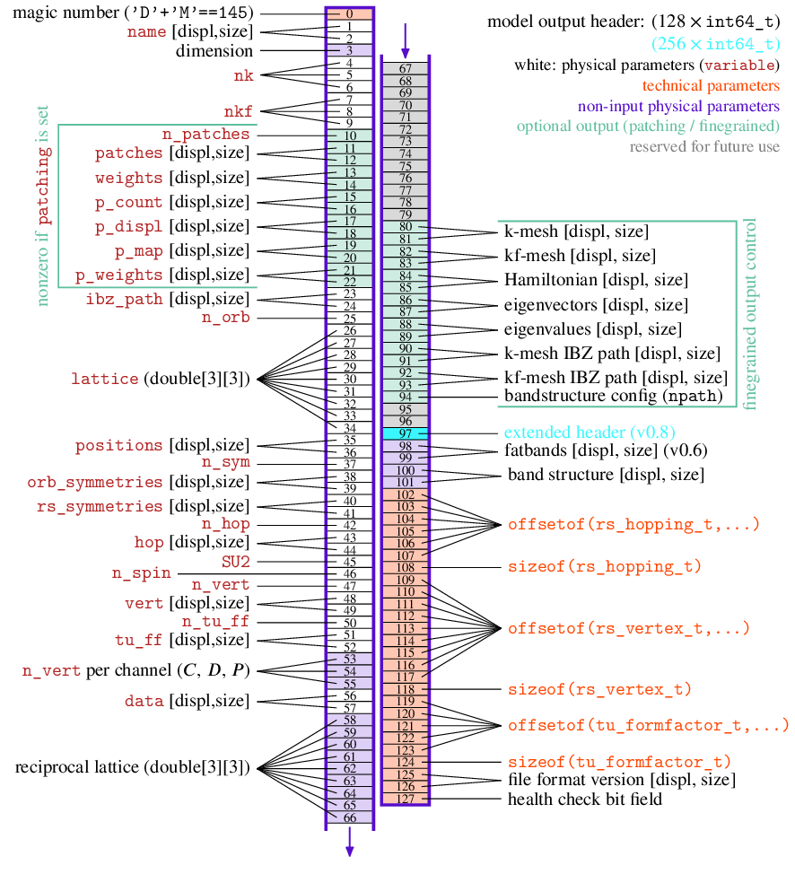

Output
-
char *diverge_model_to_file(diverge_model_t *mod, const char *fname)
[source] output a
diverge_model_tto a.dvgfile that can be read using thediverge.outputpython library (see Simulation Output). more control can be obtained usingdiverge_model_to_file_finegrained()using the configuration structurediverge_model_output_conf_t. The defaults for this struct are given indiverge_model_output_conf_defaults(only accessible from C due to class/struct ditochtomy in C++), ordiverge_model_output_conf_defaults_CPP(). functions return a checksum of the model as a string (must not be free’d as it is statically owned by libdivERGe)file format specification info graphic (text below)

headeris 128 elements of typeindex_t(64 bit signed integers)all displacement/length information is in bytes
header[0]:DIVERGE_MODEL_MAGIC_NUMBERheader[125-126]:file format version string [displ, size]. if both are zero, default to v0.4 for diverge.output.read().
header[1-2]:name [displ, size]
header[3]:dim
header[4-6]:nk
header[7-9]:nkf
header[10-22]:0 if patching == NULL, else:
header[10]:n_patches
header[11-12]:patches [displ, size]
header[13-14]:weights [displ, size]
header[15-16]:p_count [displ, size]
header[17-18]:p_displ [displ, size]
header[19-20]:p_map [displ, size]
header[21-22]:p_weights [displ, size]
header[23-24]:ibz_path [displ, size]
header[25]:n_orb
header[26-34]:lattice [interpret as double[3][3]]
header[35-36]:positions [displ, size]
header[37]:n_sym
header[38-39]:orb_symmetries [displ, size]
header[40-41]:rs_symmetries [displ, size]
header[42]:n_hop
header[43-44]:hop [displ, size]
header[45]:SU2
header[46]:n_spin
header[47]:n_vert
header[48-49]:vert [displ, size]
header[50]:n_tu_ff
header[51-52]:tu_ff [displ, size]
header[53-55]:n_vert_chan
header[56-57]:data [displ, size]
header[58-66]:reciprocal latttice [interpret as double[3][3]]
by default all the following are zero. They can be controlled via the finegrained function
diverge_model_to_file_finegrained()header[80-81]:kmesh [displ, size]
header[82-83]:kfmesh [displ, size]
header[84-85]:ham [displ, size]
header[86-87]:U [displ, size]
header[88-89]:E [displ, size]
header[90-91]:kmesh ibz_path [displ, size]
header[92-93]:kfmesh ibz_path [displ, size]
Both the kmesh and kfmesh ibz_path can only be calculated if ibz_path is set. These two objects require a bit of internal structure to be read correctly: The memory layout is:
Note that [displ, size] accounts for the full displacement and size of the memory layout described above
header[97]:nonzero if the actual header size is
256 * sizeof(int64_t). The extended header is currently unused, but this field is reserved for future extensions.
if ibz_path is set, else all the following are zero
header[98-99]:fatbands [displ, size]
header[100-101]:bandstructure [displ, size]
structure offest/size information, useful for python wrapping
header[102]:offsetof(rs_hopping_t, R)header[103]:offsetof(rs_hopping_t, o1)header[104]:offsetof(rs_hopping_t, o2)header[105]:offsetof(rs_hopping_t, s1)header[106]:offsetof(rs_hopping_t, s2)header[107]:offsetof(rs_hopping_t, t)header[108]:sizeof(rs_hopping_t)header[109]:offsetof(rs_vertex_t, chan)header[110]:offsetof(rs_vertex_t, R)header[111]:offsetof(rs_vertex_t, o1)header[112]:offsetof(rs_vertex_t, o2)header[113]:offsetof(rs_vertex_t, s1)header[114]:offsetof(rs_vertex_t, s2)header[115]:offsetof(rs_vertex_t, s3)header[116]:offsetof(rs_vertex_t, s4)header[117]:offsetof(rs_vertex_t, V)header[118]:sizeof(rs_vertex_t)header[119]:offsetof(tu_formfactor_t, R[3])header[120]:offsetof(tu_formfactor_t, ofrom)header[121]:offsetof(tu_formfactor_t, oto)header[122]:offsetof(tu_formfactor_t, d)header[123]:offsetof(tu_formfactor_t, ffidx)header[124]:sizeof(tu_formfactor_t)header[127]:bit field (64bits) that is all zero when the numerical representations are correct. if not, errors are indicated in the following manner:
the leftmost (first) bit is one when floats are not 32bit wide
the second bit is one when doubles are not 64bit wide
the third bit is one when integers (int and
index_t) are not little endianthe fourth bit is one when 1 byte (
sizeof(char)) is not the same as 8 bit.

-
struct diverge_model_output_conf_t
[source] to have fine-grained output control over
diverge_model_to_file(). Used explicitly indiverge_model_to_file_finegrained(), and implicit in the python wrapperdiverge.model_to_file_PY(). Defaults are not documented here, but can be obtained from C/C++/Python viadiverge_model_output_conf_defaults_CPP()or from the static constant variablediverge_model_output_conf_defaultsin C.-
int kc_ibz_path
[source] include the indices on the coarse mesh that describe the ibz path. must have
diverge_model_t.n_ibz_path> 0.
-
int kf_ibz_path
[source] include the indices on the fine mesh that describe the ibz path. must have
diverge_model_t.n_ibz_path> 0.
-
int npath
[source] integer. use this as the number of points on the IBZ path (cf.
diverge_model_output_set_npath()). Only used when nonzero; but then with precedence over what is/has been set indiverge_model_output_set_npath(). possible nonzero values: -1 (use eigenvalues on mesh), >=1 (explicitly calculate H from hoppings), <-1 (explcitly calculate H from hoppings in batched manner with this many pts).
-
int fatbands
[source] if (
diverge_model_output_conf_t.npath== -1 &&diverge_model_t.n_ibz_path> 0 && common internals are set), output the absolute value of the orbital to band matrices
-
int kc_ibz_path
-
static const diverge_model_output_conf_t diverge_model_output_conf_defaults
[source] output configuration defaults, accessible from C, for values look at source
-
diverge_model_output_conf_t diverge_model_output_conf_defaults_CPP(void)
[source] return the defaults of the
diverge_model_output_conf_tstructure from CPP/Python. For C you can use a plain, simplediverge_model_output_conf_t outconf = diverge_model_output_conf_defaults;
-
char *diverge_model_to_file_finegrained(diverge_model_t *mod, const char *fname, const diverge_model_output_conf_t *cfg)
[source] offers the same functionality as
diverge_model_to_file()including fine-grained controls over all internal structures. Returns the md5sum of the written file as static string.- Parameters:
mod (diverge_model_t) – model
fname (const char*) – file name of the output
cfg (const diverge_model_output_conf_t*) – pointer to config structure, can be NULL for defaults.
-
char *diverge_model_to_file_fg(diverge_model_t *mod, const char *fname, const diverge_model_output_conf_t *cfg)
[source] alias for
diverge_model_to_file_finegrained()
-
void diverge_model_output_set_npath(int npath)
[source] set the number of points per IBZ segment for the bandstructure calculation. defaults to
DIVERGE_MODEL_NBANDSTRUCTURE(300). must be called beforediverge_model_to_file(). If set to -1, usediverge_kmesh_to_bands()on the internal energy array and do not generate a band structure. requires common internals to be set (due to the energy array).